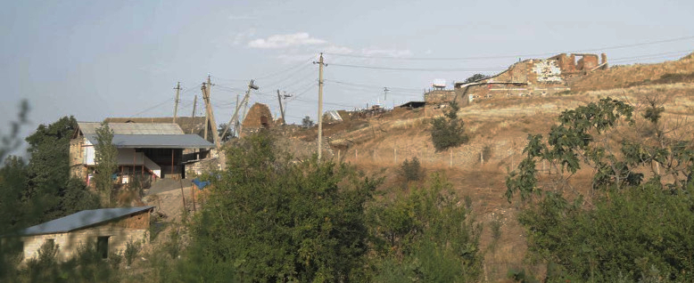
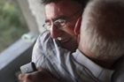

АРМЯНИН В АЗЕРБАЙДЖАНЕ: О СТЕНАХ, КОТОРЫХ НЕТ

ПОГРАНПОСТЫ И ТЕЛОХРАНИТЕЛИ
Я думал, что попаду в Азербайджан другим способом, через Текалинский процесс: треугольник на границе Азербайджана, Армении и Грузии будет разминирован и руководство наших стран начнет переговоры по Карабаху. И тогда, будет установлен особый паспортный режим для жителей приграничья, который позволит хотя бы в определенные дни в году встречаться, налаживать и восстанавливать связи между селами – решать вопросы воды, торговать, создавать реально работающую модель доверия, основанную на интересах Человека. До недавнего времени я представлял, что именно так и сам попаду в Азербайджан, когда откроется специальный армяно-азербайджанский миротворческий погранпункт. Но Текалинский процесс был насильно остановлен, не успев начаться.
Представители гражданского общества и раньше приглашали меня в Азербайджан на разные проекты. Но как только я соглашался ехать, начиналось выдвижение условий и переговоры о том, что именно я должен говорить и делать там. И эта процедура, заставляла меня отказываться от возможности побывать в Азербайджане. Был готов поехать в любое время, но поехал именно сейчас, потому, что ехал к другу, а друзья не ставят условия и не предъявляют требования. При получении разрешения было лишь оговорено, где именно я побываю: Карачинар, Баку, Бильгя.
Я поехал в Азербайджан по приглашению Зардушта Ализаде, чтобы оформить с ним послание, которое хотим разнести широко - пора начинать мириться по-серьезному, а не имитировать бесконечный "мирный процесс". Стены в наших мозгах, в нашем воображении, препятствия на пути решения конфликта – они придуманы, их нет в реальности. Мириться по-серьезному - значит не уступать свою свободу тем, кто ведет информационную войну. Нет смысла отказываться и от ответственности за прошлые и за будущие войны, она и так лежит и ляжет нам на плечи.
Моя поездка не была публичной, и наверно, именно о такой мечтают молодые люди, которым интересно побывать в гостях у друзей, азербайджанцев. Об этом мечтают также армяне, покинувшие родные места: чтобы было можно без предусловий, без СМИ, без последствий, только для себя поехать в соседнюю, а не “вражескую” страну.
Я поехал, чтобы показать, не обязательно быть политически преследуемым в Армении, чтобы иметь возможность попасть в Азербайджан. Для этого достаточно приглашение друга, и чтобы там был друг, не нужно особых заслуг, достаточно просто НЕ быть солдатом информационной войны.
Я был там свободен, абсолютно свободен, как и везде – в Армении, в Грузии, Германии, Турции, России. Доверие между двумя людьми, человеком, который приглашает, и человеком, который едет - ломает все стены. Моя поездка состоялась не в обход существующих проблем, это был прямой путь. И такая возможность есть у каждого гражданина Армении. Я знал всегда, и убедился теперь на опыте, что закрытость и опасность Азербайджана для армян есть только в зоне информационной войны.
Эта поездка была важна для меня лично, она помогла мне, надеюсь, в ближайшее время, поможет и другим.
Меня три года назад депортировали из общественного сектора. Сегодня не состою ни в одной партии или организации, и тем самым не подотчетен обществу. Поэтому позволил себе не созывать пресс-конференцию, а просто рассказать о поездке.
Многих интересует легальная процедура въезда и выезда граждан Армении в Азербайджан, а также последствия этой процедуры по возращении на родину. Я поехал через Красный мост, на безвизовых основаниях, но при наличии полученного заранее разрешения. На грузинской стороне спросили: Действительно ли Вы хотите перейти границу? Не считаете ли это опасным для себя? Это стандартные вопросы, которые задаются также и в Садахло, когда граждане Азербайджана переходят в Армению. На азербайджанской стороне уже ждали сотрудники специальной службы, которые должны были сопровождать меня в дороге.
Воспользуюсь возможностью сравнить две аналогичные процедуры. Мне поставили печати азербайджанского погранпункта на входе и выходе. Когда из Азербайджана приезжают в Армению, печати не ставятся. Могу предположить, что есть неформальная договоренность с грузинскими пограничниками: они ставят печать выхода, выпуская человека в некую пустоту, потом ставится грузинская печать с датой возвращения из этой пустоты. Азербайджанский вариант лишен таких абсурдных нюансов, и свидетельство тому – печати в моем паспорте, подтверждающие обыкновенную и легитимную процедуру, которая показывает, что Азербайджан открыт для граждан Армении.
Чтобы завершить тему о погранпунктах, расскажу о последствиях, связанных с посещением Азербайджана. Два дня после моего возвращения домой прошли без последствий, и я стал опять собираться в дорогу. На этот раз нужно было ехать в Россию через Грузию – довезти односельчан к месту их работы. На выезде из Армении меня задержали на границе где-то на час. Пришлось пройти запоздавшее собеседование по вопросам: Был ли я Азербайджане? Когда там был? Почему поехал? Что там делал? Вызвали девушку, чтобы записывала вопросы и ответы. Когда возвращался домой, повторилось то же самое. Я сообщил начальнику смены, что собеседование уже было, несколько дней назад, на ту же тему. Он объявил, что не имеет значения, и что так будет каждый раз: наши пограничники при каждом моем появлении на их горизонте будут «наказывать» бесцельным долгим ожиданием паспорта, и будет «пожизненный час сурка» - 2 минутное содержание беседы, растянутое болтовней на неопределенное время. Чтобы помочь мне смириться с судьбой, он добавил: “Надо было подумать, прежде чем ехать в Азербайджан.” Пока лишь отмечаю произвол начальника смены, превысившего свои полномочия. Если это повторится в третий раз, обещаю подумать, но не о том, что зря поехал в Азербайджан.
Второй вопрос, интересующий граждан Армении, планирующих поездку в Азербайджан, и граждан Азербайджана, планирующих поездку в Армению, касается сопровождения, которое осуществляется в целях безопасности. Думаю, разумные люди и без моего разъяснения знают в чем смысл: малейшее происшествие бытового уровня, может стать информационным поводом для разжигания конфликта. И поэтому госструктуры делают все, чтобы застраховаться от случайных передряг, в которые может попасть любой иностранец, да и собственные граждане тоже. Если сравнивать выполнение такой функции в наших странах, моя поездка не идет ни в какое сравнение с посещениями азербайджанцев Армении. Я не был там под режимом, как были они у нас. Сопровождение было только по дороге, из пункта в пункт. Мое общение с людьми не происходило под надзором, я гулял, ходил в гости, обедал в ресторане, ездил на дачу. Свободно, без сопровождения. Мне возразят, что гиперопека на наших проектах в Армении была из-за общественных мероприятий с участием азербайджанцев. Уверен, что это не так. Ведь надзирали за ними не во время массовых мероприятий, а в перерывах, в ситуациях бытовых, кулуарных. Да, выходя на улицу в Баку, я не ходил со специальной табличкой “Армянин”. Но в селе Карачинар знали, что я армянин и это была общественная встреча. Я поехал к незнакомым людям, и поехал как армянин, незнакомый им человек. Это трудно назвать личной встречей. При этом мы общались свободно, никто со стороны не присутствовал, не торопил, и не встревал в разговор.
Это очень важное проявление культуры народа и культуры госструктур, граждане принимают в свой дом гостя, власть, если разрешила человеку въехать в страну, не унижает его демонстративным контролем. В Армении такой культуры, на уровне телохранителей, а значит и их начальства, не было и нет оснований предполагать, что она вдруг появится.
Предвижу, как мне возражают друзья, недовольные чиновничьим произволом и политическими репрессиями в Азербайджане. Сравниваю не для того, чтобы похвалить ваших и очернить наших. Я пытаюсь решить проблему. До смены власти в Армении делал это не публично, правозащитными методами. Не удалось. Во время приезда моего коллеги из Баку в Ереван, на Фестиваль турецких фильмов, я был вынужден отказаться от телохранителей и предпочел нести огромную, и можно сказать непосильную ответственность за гостя, лишь бы не подвергать его воздействию особого режима нервозности и дискомфорта, который создавался в Армении для азербайджанцев. Теперь говорю об этом публично. Надо решить эту проблему. По опыту моей поездки, и особенно в той части, которая прошла вне Баку - государственные структуры не проявили произвола, и этим поддержали культуру, существующую в обществе. В Армении я такого не видел. Культура мира — не слова на флипчарте, она есть в реальной жизни - это детали и мелочи, которые настраивают человека, не мешают ему быть искренним. Это детали, подчеркивающие доверие, они есть в Азербайджане, их нет в Армении.
Тот факт, что граждане наших стран не едут друг к другу в гости, тот факт, что армяне и азербайджанцы используют для встреч только нейтральные страны – это не процедурный вопрос, это вопрос культуры. Я ехал в Азербайджан к другу, в соседнюю, а не “вражескую страну”, и меня приняли адекватно. В Армении неадекватно реализуются те идеи миролюбия, которые провозглашаются с высоких трибун. Возможно, если из Азербайджана к нам приедет высокопоставленное лицо, все пройдет на высшем уровне. Но это не относится к культуре. Если нет времени ее поднимать, просто относитесь ко всем гостям из Азербайджана и людям, которые с ними общаются в Армении, как к министрам, хотя бы так решайте проблему.
МИРОТВОРЧЕСТВО БЕЗ ДОВЕРИЯ
Уже три года, как не работаю в проектах, могу посмотреть на себя и на других со стороны. Я выражался жестко в отношении к гражданским миротворцам. Критиковал изнутри, часть соглашалась со мной втихаря, другая – обижалась не на шутку, распространяя в ответ сплетни и с готовностью подключаясь к заказным компаниям по закрытию моих проектов. Сейчас я оказался вне этой сферы, и мое отношение ко всему, что каким-то боком касается миротворчества, стало более жестким.
Больше всего меня заботит воспроизводство в новом поколении. Военно-политическая история конфликта изложена в различных источниках, знакомство с которыми может дать базу для критического мышления. Но есть еще история гражданского диалога состоящая из разрозненных самохвалительных речей, которые покрывают грязную тайну. Так называемый гражданский диалог между обществами – процесс идущий снизу вверх – не существовал никогда. И проблема не в том, что происходящее внизу, там и оставалось. Проблема в том, что не признается факт - гражданское миротворчество контролировалось сверху. Имитации, которые демонстрируют, что есть какой-то независимый от политической конъюнктуры мирный диалог, вгоняют в гроб надежду на мир. Это хуже, чем пропаганда вражды. Такими проектами каждый армянин и азербайджанец еще больше закрепляется в статусе стороны конфликта. Застрявшее в мозгу каждого понятие “вражеская страна” мешает видеть реальность.
Если раньше я говорил, что такие проекты безрезультатны, теперь говорю, что такие проекты столь же преступны, как и пропаганда войны, и по результату они более опасны. Это уже не просто паразитизм на конфликте. Результат в виде того, что армяне и азербайджанцы едят за одним столом, используя нож и вилку по назначению, а не для того, чтоб выколоть глаза друг другу, результат в виде глубокомысленных рассуждений о том, что и среди них (армян/азербайджанцев), тоже есть люди – на данном этапе – это антимиротворчество, это война.
Создана СИСТЕМА и есть МЕТОД, который не подлежит обсуждению. В сложившихся обстоятельствах, новым в миротворчестве людям, нормальным людям, не аферистам, я не говорю - не делай, не участвуй. Говорю, если ТАК будешь делать, лучше не делай. Если уж участвуешь, делай это открыто. Не поддавайся установке, что открытость мешает диалогу. Так могут думать и говорить только рабы или солдаты информационной войны. Если человек подчиняется навязанным организаторами соображениям так называемой безопасности, и особенно делает это инерционно и постоянно участвует на таких встречах, значит он записывается в армию разжигателей конфликта. Он тем самым служит войне. Опубликовать свои впечатления, не значит подставлять других. Суть встречи с азербайджанцами – не фото с обнимашками, и не публикация имен. Суть в том, чтобы присутствовать там, на встречах, с миссией - рассказать, поделиться впечатлениями и выводами, к которым пришел. Если уж видишь смысл в миротворческих тусовках, в то время, когда на фронте идет стрельба, оформи для себя и для других этот смысл. Не подставляй людей, и не молчи. Минимум. Отвечай за себя, будь открытым, у трибуны и в кулуарах. Не оглядывайся на других. Не снимай посты, не закрывай свои страницы в социальных сетях, только потому, что послали тебе нецензурные слова. Не реагируй на брань, не пугайся, не оправдывайся. Будь открытым, чтобы тебе доверяли. Это и есть культура мира. Из-за того КАК организовали встречу, меняются и КТО на ней был. Порядочные люди уходят или развращаются. Так что у меня жесткое отношение и к методу, и к тем, кто его применяет.
Запад, точнее номенклатура западных стран, делегированная для реализации миротворческих программ, похожа на советскую номенклатуру. Их цель – поставить галочки. При этом идет не просто растрата финансовых средств. Выделенные на поддержку миротворческих инициатив ресурсы вкладываются в войну, напрямую, в информационную войну.
Гражданское миротворчество это не отдельное что-то. Это тоже демократия и права человека. Эта сфера искусственно отделена, и не только игнорируется, но и специально извращается, снизу, сверху, со всех сторон. Если в контексте борьбы за демократию внутри страны – мы все – армяне и азербайджанцы получаем информационную, правовую и финансовую поддержку, то проблемы демократии и прав человека, связанные с Карабахским конфликтом - нарушения права на жизнь, на свободу слова, на гражданское участие и получение информации - находятся в полном и намеренном игноре со стороны международных структур. Тут мы уже не граждане, а пушечное мясо. Безопасность миротворцев в их закрытости - эта идея поддерживается западными институтами, хотя в других сферах те же гражданские активисты открыто вступают в противостояние с властями, и находят поддержку не только у правозащитных организаций, международное сообщество использует свои рычаги давления на руководство наших стран.
Маститый правозащитник или геополитический эксперт, выступая на тему Карабахского конфликта, вдруг превращается в милую обезьянку, которой коллеги из западных стран прощают все глупые шалости. И это считается нормальным. Ярый и скандальный оппозиционер более защищен, чем студент, который открыто участвовал в грантовом миротворческом проекте, и это считается нормальным. О какой поддержке мирного урегулирования идет речь?
Мониторинги нарушений прав человека, кем бы они не составлялись – по сути таковыми не являются. Статистика смертей на линии фронта, всех, военных и гражданских, это статистика вопиющего попрания прав человека, эти права нарушаются властями, имеющими мандат на переговоры. Погиб ли человек от снайперской пули, или на допросе в полицейском участке – его убило государство, оно должно отвечать за это перед своими гражданами. И это лишь часть игнорируемых проблем.
Чтобы наконец завершить тему, сделаю последнее сравнение. Все, что за тридцать лет делалось в сфере миротворчества – похоже на советское панельное здание, которое возвели выполнив пятилетку за 2 года. Нарушена технология и материал бракованный. Оно пока стоит, но если чуть потрясти - рухнет. Во время апрельской войны это здание подверглось непродолжительной тряске и сразу же с фасада обвалилось несколько плит. Полетели вместе со снарядами не менее опасные бетонные обломки гражданского диалога. Почему так произошло и почему продолжают попытки подчинить такое здание, можно объяснить, но от этого легче не станет.
КАРАЧИНАР
Я детально представлял, как поеду в Карачинар, в гости к людям, которые живут в доме моего деда. Там я жил до семи лет, потом приезжал на летние каникулы. Когда уже узнал от коллег НПО-шников, что в Карачинаре размещены ВПЛ из Ходжалу, мои фантазии обогатились деталями. Вот я, проезжаю по знакомой дороге, машина останавливается у ворот, я вхожу во двор, потом в дом. И радуюсь – что-то изменилось, и что-то осталось. Я показываю детям, где прятал свои сокровища, потом идем гулять по деревне. И ко мне возвращается праздник. Семья, которая живет в доме деда, становится мне родной. И даже если не буду с ними часто видеться, в памяти отпечатается эта новая картинка счастья и уюта, и буду вспоминать уже новый Карачинар. Я ждал этого 29 лет.
Детская привычка воображать, как хорошо будет в Карачинаре, ввела меня, 50-летнего, в заблуждение. Эта поездка вернула меня не в детство, а в Карабахскую войну. Вместо праздника - состояние потери, безвозвратной потери. Дом деда разрушен снарядом. Нет и тутового дерева. Дом дяди стоит целым, невредимым, обжитым. Что-то изменилось, что-то сохранилось. Но праздник не состоялся по другой причине.
Население Карачинара - 80% ВПЛ из Кельбаджара и 20% беженцев из Армении. Как только вышел навстречу первый сельчанин, до меня дошло – это не праздник. Я здоровался с людьми, знакомился. Мы говорили о чем-то. Ничего не значащие слова произносились, чтобы сдержать слезы. Я и они, стоим вот так разговариваем, и как будто прямо сейчас идет война, и мы, как будто это происходит сейчас, узнаем, что наши дома, наши села разорены. Ничего уже нельзя сделать. Обоюдное переживание потери. Как будто спустя годы после смерти близкого человека, накатывает чувство, что это случилось сегодня, только что.
Со мной говорили в основном мужчины лет сорока, они пережили войну в детстве, и помнили все. Те, кто постарше… Видели ли вы человека, который делает шаг, чтобы поздороваться, и вдруг разворачивается и уходит, чтобы не заплакать? Я был потрясен, шокирован, тем, что происходит. В селе ко мне не подошел ни один ребенок. Они стояли вдалеке, инстинктивно понимая, что с гостем пришел не праздник, с гостем пришла печаль, и даже их милое шаловливое вмешательство не может исправить ситуацию.
Я был в Кельбаджаре 12 лет назад. Там живут армяне из Шаумяновского района, в том числе из Карачинара. Было впечатление, что люди здесь не живут, а ждут чего-то. Вещи расставлены по домам, одежда в шкафах, но настроение – как на вокзале, где приходится ночевать из-за опоздавшего поезда. Я - правозащитник, миротворец, гуманист почему-то думал, что в Карачинаре будет не так, как в Кельбаджаре. Я воображал себе, что потерявшие свой дом, свою родину азербайджанцы, должны были почему-то лучше адаптироваться на новом месте. Я не был удивлен гнетущим впечатлением в Кельбаджаре. Мне не надо было ехать туда, чтобы понять, что они чувствуют, я знаю их умом и сердцем. Но мне не хватило ума и сердца, чтобы не воображать, будто мой приезд в Карачинар может стать праздником. Глаза мужчин, наполненные слезами, разрушили стену, которая пряталась внутри меня.
Понимаю, что и Карачинар и Кельбаджар не живут в вечном трауре. Понимаю, что я своим присутствием разбередил тяжелые воспоминания. Но суть не в этом. Я ставил разницу между азербайджанцами и армянами, не логикой, а сердцем, считая, что ИХ боль, может быть меньше НАШЕЙ, что ИМ легче забыть и привыкнуть, НАМ труднее. И воображал, что мой приезд принесет в Карачинар только праздничные хлопоты связанные с приемом гостя. Что с нами сделала эта война?
Хозяин дома, где раньше жил мой дядя, попросил меня поехать в одно из сел Вардениса, и найти там яблоню, она особенная. Он знает, и я знаю, что от этого не изменится ничего. Но так продолжится наше с ним общение. Культура мира.
Я был и в соседнем селе – Зейва. Встретился там с друзьями деда и праздник наступил, настоящий, не воображаемый. Часами говорили о моем любимом человеке, вспоминали и рассказывали, перебивая друг друга, разные истории. Оттуда поехал в Баку, к своим друзьям. И сейчас написал обо всем, чтобы объяснить: пора мириться по-серьезному.
Георгий Ванян
05-09-18
Неркин Цахкаван (Тавуш, Армения)